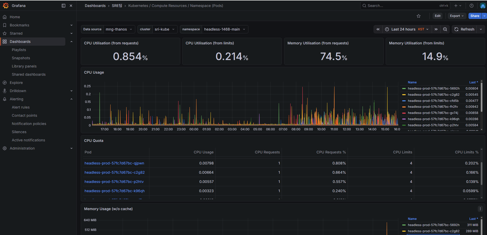
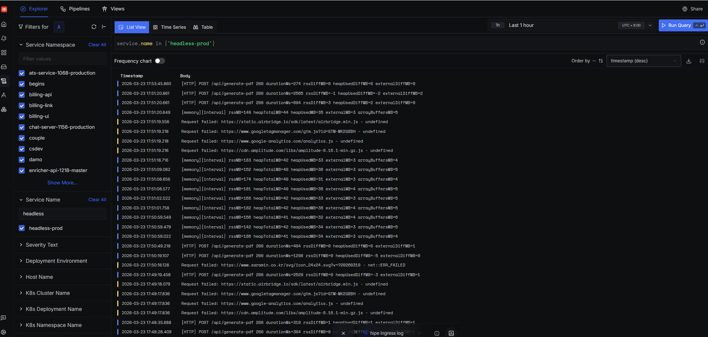

Introduce
Java, Spring Boot, Node.js, PHP 기반으로 서비스 백엔드 개발, 성능 개선, 운영 자동화를 수행해온 7년차 백엔드
개발자입니다.
채용 서비스, 커머스, 학사정보 시스템 등 다양한 도메인에서 실제 운영 중인 서비스의 병목을 개선하고 더 빠르고 안정적으로 동작하도록 구조를
고도화해왔습니다.
사람인에서는 이력서 PDF 다운로드 구조 개선, 맞춤법 검사 API Java 전환, AI 자기소개서 유료화 기능 개발 등을 수행했습니다.
브라우저 재사용 구조와 렌더링 최적화를 통해 PDF·HTML 생성 평균 처리시간을 약 51% 단축했고,
맞춤법 검사 모듈 전환 과정에서는 병렬 처리 구조와 부하 테스트를 통해 4000자 기준 응답시간을 7.98초에서 3.71초로 개선했습니다.
필웨이에서는 이미지 처리 자동화, 할인 정책 시스템 재설계, 네이버 가격 연동 자동화 등을 통해 운영 효율과 대량 처리 대응력을 높였습니다.
또한 개인정보 암호화 전환 프로젝트에서 대규모 컬럼 변경과 데이터 마이그레이션을 검토·적용하며 운영 리스크를 줄이는 작업도 수행했습니다.
성능 병목과 운영 비효율의 원인을 구조적으로 분석하고, 확장 가능한 실행 구조와 운영 체계를 설계해 실제 서비스 성능과 안정성을 개선하는 데
강점이 있습니다.
정책 정의, 예외 케이스 정리, 로그 기반 추적 구조 설계, QA 대응 등 협업 중심의 업무도 함께 수행하며 개발 효율과 서비스 운영 안정성을 함께 높이는
방향으로 일해왔습니다.
Experience
2022.03 - 현재 · Backend Developer
회원수 680만, 연간 입사지원 3,500만 건의 채용 서비스
이력서 PDF 다운로드 속도 개선
2026.01 - 2026.03
Node.js, Puppeteer, Kubernetes, Grafana, ArgoCD, SigNoz
기존 2대 변환 서버의 브라우저 재실행·렌더링 대기 병목을 해소하고,
단일 서비스 전용 구조를 Kubernetes 기반 공용 PDF 변환 인프라로 전환
성과 : PDF·HTML 생성 평균 처리시간 약 51% 단축,
Kubernetes 기반 공용 변환 구조 구축
1. 확장 한계를 해소하기 위해 PDF 변환 구조를 공용 인프라 기반으로 전환
문제
- 기존 PDF 변환 서버는 2대의 단순 구성으로 운영되어 트래픽 증가에 유연하게 대응하기 어려웠음
- 사람인 서비스 중심 구조라 신규 서비스에서 공통으로 활용하기 어려웠음
- 배포와 운영 구조가 표준화되지 않아 안정적인 확장과 운영 자동화에 한계가 있었음
해결
- GitLab CI 기반으로 빌드·테스트·배포 파이프라인을 구성하고 Harbor·SonarQube·Helm·ArgoCD를 연계한
배포 흐름을 구축함
- 기존 2대의 변환 서버를 신규 서버 노드 4대, Pod 10~20 규모의 Kubernetes 운영 구조로 확장함
- 사람인 외 신규 서비스에서도 공통으로 사용할 수 있도록 PDF 변환 구조를 전환함
결과
- PDF 변환 서비스를 배포 및 확장 가능한 구조로 전환해 증가하는 요청에 유연하게 대응할 수 있게 됨
- 단일 서비스 전용 구조를 공용 인프라 기반으로 개선해 확장성을 확보함
- CI/CD와 Kubernetes 기반 운영 체계를 통해 배포 일관성과 운영 안정성을 높임
2. 브라우저 생명주기 충돌과 렌더링 병목을 제어해 처리 성능과 안정성을 함께 개선
문제
- 유휴 시간 기반 종료 로직이 요청 처리 시점과 겹치면 브라우저 오류가 발생할 수 있었음
- 불필요한 요청과 비효율적인 HTML 로딩 대기 조건으로 PDF·HTML 생성 시간이 길었음
- 사내 정적 리소스 서버에서 CSS를 정상적으로 불러오지 못해 레이아웃이 깨지는 문제가 있었음
해결
- 유휴 시간 기반 자동 종료 및 재실행 로직을 적용하고, 작업 중인 요청이 있을 경우 브라우저가 종료되지 않도록 보완함
- 브라우저 종료 중에는 신규 요청이 기존 브라우저를 사용하지 않고 대기하도록 제어함
- CDP 기반 요청 차단 방식을 적용해 불필요한 요청 비용을 줄이고, HTML 로딩 대기 조건을 실제 렌더링 흐름에 맞게 최적화함
- User-Agent를 추가해 방화벽 차단 이슈를 해결함
결과
- 브라우저 생명주기 충돌로 인한 오류 가능성을 줄여 재사용 구조에서도 안정적인 운영이 가능해짐
- PDF 및 HTML 생성 평균 처리시간을 약 51% 단축함
- 처리 속도뿐 아니라 레이아웃 안정성까지 함께 개선함
3. 모니터링 체계를 구축하고 확장 기준을 정비해 운영 가시성과 대응력을 확보
문제
- 서비스 상태와 리소스 사용량을 종합적으로 파악하기 어려워 운영 이슈를 빠르게 인지하기 어려웠음
- 오토스케일링 및 리소스 조정 기준이 명확하지 않아 운영 판단이 경험에 의존하는 부분이 있었음
해결
- Grafana와 SigNoz 기반으로 서비스 모니터링 체계를 구성함
- 기존에 연결되지 않았던 서비스까지 모니터링 범위를 확장함
- 수집된 지표를 바탕으로 오토스케일링 기준과 리소스 사이즈를 조정함
결과
- 서비스 상태와 병목 지점을 빠르게 파악할 수 있는 운영 가시성을 확보함
- 모니터링 지표 기반으로 리소스 운영과 확장 판단이 가능한 구조를 마련함


맞춤법 검사 API Java 모듈 전환
2025.09 - 2025.10
Java, Spring Boot, GitLab CI/CD
노후화된 맞춤법 검사 API를 PHP에서 Java로 전환하고, Java 실행 방식에 맞는 구조로 재설계해 성능을 개선
성과 : 4000자 기준 응답시간 7.98초 → 3.71초, 약 53%
개선
1. PHP 구조를 그대로 이식하지 않고 Java 실행 방식에 맞는 전환 기준을 수립
문제
- 기존 PHP 기반 맞춤법 검사 API가 노후화되어 유지보수성과 확장성이 떨어졌음
- 기존 PHP 모듈 구조를 그대로 Java로 옮기면 오히려 처리 성능이 저하되는 문제가 있었음
해결
- 기존 모듈의 처리 흐름을 분석해 PHP와 Java가 강점을 가지는 입력 형태와 실행 방식이 다르다는 점을 확인함
- PHP는 긴 단락 단위 처리에, Java는 문장·문단 단위 분할 처리에 더 적합하다는 점을 바탕으로 구조 전환 방향을 재정의함
- 단순 포팅이 아니라 Java 런타임 특성에 맞는 분할 처리 중심 구조로 재설계 기준을 수립함
결과
- 단순 이식이 아닌 Java 특성에 맞는 구조 전환 필요성을 명확히 정의함
- 이후 문장 분할·병렬 처리 구조를 설계할 수 있는 기술적 기준을 마련함
2. 긴 텍스트 지연을 줄이기 위해 문장 분할·청크 병렬 처리와 순서 보장 구조를 구현
문제
- 긴 텍스트를 단일 흐름으로 처리하면 응답시간이 길어졌음
- 병렬 처리 시 결과 순서가 뒤섞일 수 있어 정확한 병합 방식이 필요했음
해결
- BreakIterator 기반으로 문장을 분할하고, 처리 효율이 가장 좋았던 300자 내외 청크로 재구성함
- 분할한 청크를 CompletableFuture 기반으로 병렬 처리하고, 각 결과에 index를 담아 수집함
- 처리 완료 후 index 기준으로 정렬·병합해 문장 순서를 유지하는 구조를 적용함
결과
- 긴 텍스트에 적합한 병렬 처리 아키텍처를 구현함
- 응답시간 단축의 핵심이 된 실행 구조를 마련하면서도 결과 순서 보장을 함께 달성함
3. 성능 테스트와 JVM 지표 점검으로 구조 개선 효과와 운영 안정성을 검증
문제
- 구조 전환과 병렬 처리 적용 이후 실제 응답시간이 얼마나 개선됐는지 정량적으로 검증할 필요가 있었음
- 동시 요청 증가 상황에서도 GC, Old 영역, Metaspace 상태를 포함해 운영 안정성을 함께 확인해야 했음
해결
- 500자·2000자·4000자 기준 속도 및 부하 테스트를 수행해 PHP 상용 버전과 Java 전환 구조의 응답시간을 비교함
- jstat 로그를 기반으로 Young GC, Full GC, Old 영역, Metaspace 사용량을 함께 점검해 운영 환경에서의
메모리 동작을 확인함
- 성능 개선의 주요 원인이 Java 구조 전환과 병렬 처리 방식에 있음을 수치로 검증하고, 메모리 관리 포인트는 운영 관점에서
별도로 정리함
결과
- 4000자 기준 응답시간을 7.98초에서 3.71초로 약 53% 개선함
- PHP 상용 대비 Java 전환 구조의 성능 향상 효과를 정량적으로 검증함
- Full GC 없이 운영 가능함을 확인했고, Metaspace 관리 필요성 등 운영 안정화 포인트도 함께 도출함
PC 개인 MY 홈 성능 개선
2024.09 - 2024.10
PHP, MySQL, JavaScript
반복 호출과 불필요한 처리 흐름을 개선해 응답 속도를 단축
성과 : TTFB 기준 평균 3초에서 1초 이하로 단축
1. 반복 호출과 불필요한 처리 흐름을 제거해 응답 속도와 측정 신뢰도를 함께 개선
문제
- 페이지 내 반복 호출되는 API와 불필요한 처리 흐름으로 응답 속도가 느렸음
- 측정 과정에서 사내 웹 디버그바 영향으로 LCP 데이터가 왜곡되는 문제가 있었음
해결
- 반복 호출되던 API 구간을 분석하고 제거함
- 데이터 처리 흐름을 단순화해 페이지 응답 시간을 줄임
- 환경변수 기반으로 디버그바 노출 여부를 분기하도록 수정함
- 리팩토링을 통해 코드 가독성과 유지보수성을 함께 개선함
결과
- TTFB 기준 평균 3초 수준이던 응답시간을 1초 이하로 단축함
- 실제 사용자 환경에 가까운 성능 데이터를 기반으로 개선 효과를 확인함
AI 자기소개서 유료화 서비스 개발
2025.07 - 2025.08
Java, Spring Boot, JPA, React
AI 자기소개서 서비스 유료화 과정에서 이용권 차감 로직과 코칭 중계 API를 개발하고, 로그
기반 QA 지원 체계를 정리
성과 : 유료화 정책, 이용권 차감 기준, 중계 API 연동 구조를 일관되게 정리해 일정 내
안정적으로 런칭하고, 로그 기반 추적 체계로 초기 운영 대응 기반 마련
1. 유료화 정책과 연동 구조를 정리해 일관된 서비스 흐름과 QA 기준을 마련
목표
- 서비스 유료화에 따라 기능 사용 조건과 이용권 차감 기준을 명확히 정의할 필요가 있었음
- 검색 기능과 AI 기능을 연결하는 과정에서 요청/응답 구조와 예외 케이스를 일관된 기준으로 정리해야 했음
수행
- AI 자기소개서 서비스의 유료 기능 정책과 이용권 차감 로직을 설계하고 구현함
- 검색·AI 기능 연동을 위한 중계 API를 구축하고 요청/응답 데이터 구조 및 기능 흐름을 정리함
- 상세 요청·응답 로그 기반으로 QA 이슈를 분석하고 예외 상황을 추적 가능한 형태로 정리함
성과
- 유료화 정책과 시스템 연동 기준이 일관되게 정리되어 개발과 QA를 같은 기준으로 진행할 수 있게 됨
- 로그 기반 추적 체계를 통해 일정 내 안정적으로 런칭하고 운영 초기 대응 기반을 마련함
Redis 서버 분리 및 확장
2024.08 - 2024.12
PHP, Redis, MySQL
Redis 서버 분리와 신규 서버 이관 구조를 정리하고, 반복 수정 없이 확장 가능한 호출
구조로 개선
성과 : 서버 추가 시 반복 수정이 필요하던 구조를 공통화해 이관 공수를 줄이고,
Redis 분리·확장을 유연하게 수행할 수 있는 호출 구조 마련
1. 서버 추가 시 반복 수정이 필요하던 구조를 리팩토링해 Redis 확장과 이관에 유연한 호출 구조를 마련
문제
- 기존 구조는 서버 추가 시 호출부마다 직접 수정이 필요해 확장 공수가 컸음
- 서비스별 이관 범위와 배포 가능 시점이 달라 작업 병목이 발생할 수 있었음
해결
- Redis 공통 코드를 정리하고 호출 클라이언트만 추가할 수 있도록 REST 호출부 함수를 리팩토링함
- 팀원 간 작업 진척도와 배포 준비 상태를 구분해 관리하고, 병목 없이 진행되도록 이관 및 배포 순서를 조율함
결과
- 서버 분리 및 확장 시 반복 수정 비용을 줄일 수 있게 됨
- 기술 개선과 함께 팀 단위 이관 효율을 높일 수 있는 기반을 마련함
2020.05 - 2022.03 · Backend Developer
300만 회원 보유, 명품 전문 커머스 플랫폼
즉시할인 운영 시스템 및 네이버 가격 연동 자동화
2021.01 - 2021.03, 2021.05 - 2021.07
PHP, Laravel, MySQL, jQuery, Cron, Totem
즉시할인 이벤트 구조를 재설계하고, 네이버 EP 생성 및 최저가 반영 프로세스를 자동화해 대량 상품 가격 운영 체계를 개선
성과 : 하루 평균 약 87만 건 규모의 EP 자동 생성, 네이버 최저가 상품 약 8만 건 대응 체계
구축
1. 수동 중심의 즉시할인 운영을 이벤트 기반 구조로 개선해 정책 관리와 데이터 정합성을 높임
문제
- 기존 할인 운영은 수동 등록 중심이어서 정책 확장과 운영 일관성 확보에 한계가 있었음
- 이벤트, 조건, 대상 상품이 분리되어 있지 않아 자동 적용 구조로 확장하기 어려웠음
- 동일 상품에 대한 할인 중복과 활성 상태 관리 기준이 명확하지 않았음
해결
price_event, price_event_condition,
price_event_goods 구조를 기반으로 이벤트·조건·상품이 분리된 운영 방식을 반영함
- 조건 내부는 AND, 조건 그룹 간에는 OR로 동작하는 이벤트 적용 기준을 구현에 반영함
- 상품번호 기준으로 활성 할인(
active_flag=1)은 1건만 유지되도록 중복 제어 정책을 적용함
- 즉시할인 관리자(신) 어드민을 개발해 수동/자동 등록, 이벤트 상세 조회, 수정/삭제 기능을 제공함
결과
- 수동 운영 위주의 할인 정책을 이벤트 기반 방식으로 개선해 운영 효율과 유지보수성을 높임
- 중복 활성화 방지와 상태 기준 정리를 통해 할인 데이터 정합성을 높임
2. 네이버 EP 생성과 최저가 반영 프로세스를 자동화해 대량 상품 가격 운영 체계를 구축
문제
- 네이버 쇼핑 연동을 위해 상품 데이터를 정기적으로 가공·전송하고, 최저가 데이터를 반영하는 운영 프로세스가 필요했음
- 금칙어, 가격 범위, 카테고리, 브랜드, 특정 판매자 제외 등 복잡한 노출 정책을 함께 처리해야 했음
- 즉시할인 가격과 네이버 노출 가격, 최저가 대응 흐름을 수작업으로 관리하기에는 대상 상품 수가 많았음
해결
- 전체 EP 생성 배치에서 임시 테이블 기반으로 상품을 수집하고, 제외 조건과 상품명 정제 로직을 반영해 네이버 전송 데이터를
생성함
- 변경 상품만 추출하는 요약 EP를 1시간 단위로 운영하고, 즉시할인 테이블의
naver_price가 EP
가격에 반영되도록 연동함
- 네이버 최저가 엑셀 데이터를 적재한 뒤 내부 가격과 비교해 할인 대상 여부를 판단하고, 결과를
price_event_goods에 반영하도록 구성함
결과
- 하루 평균 약 87만 건 규모의 네이버 전체 EP와 변경분 요약 EP를 자동 생성하는 기반을 운영함
- 네이버 최저가 상품 약 8만 건, 수동 등록 상품 약 2만 건 규모의 가격 대응 운영 체계를 구축함
- 외부 채널 가격 연동과 할인 반영을 자동화해 운영자의 수작업 부담을 줄이고 가격 운영의 일관성을 높임
이미지 등록 API 및 변환 프로세스 자동화
2020.11 - 2021.01, 2021.09 - 2021.10
PHP, Laravel, MySQL, Shell Script, Inotify, ImageMagick
상품 이미지 업로드 진입점을 API로 표준화하고, 변환·워터마크·저장 과정을 비동기 자동화해 대량 이미지 처리 성능을 개선
성과 : 시간당 최대 처리 가능 이미지 수 3,600개 → 1,080,000개 개선
1. 업로드와 후처리가 한 흐름에 묶여 있던 구조를 API 기반 비동기 처리 방식으로 개선
문제
- 기존 이미지 등록은 업로드 시점에 확장자 검사, 리사이징, 워터마크 처리까지 함께 수행되어 흐름이 복잡했음
- 화면 중심 등록 방식이라 상품 외 다른 영역에서 재사용하기 어렵고, 처리 지연도 발생할 수 있었음
해결
- 이미지를 먼저 temp 영역에 업로드하고, 실제 상품 등록 시 사용처 디렉토리로 이동시키는 API 기반 구조로 변경함
fw_attach_image 테이블을 두어 업로드 이미지 정보와 처리 완료 이력을 관리하도록 구성함
- 기존 출력 로직에 신규 테이블 참조 분기를 추가해 구방식과 신방식이 함께 동작할 수 있도록 설계함
결과
- 이미지 업로드 진입점이 표준화되어 등록 흐름의 재사용성과 유지보수성이 향상됨
- 기존 구조를 한 번에 교체하지 않고 점진적으로 전환할 수 있는 기반을 마련함
2. Inotify 기반 자동 후처리와 분산 저장 구조를 적용해 대량 이미지 처리 병목을 완화
문제
- 리사이징, 품질 조정, 워터마크 처리를 요청 흐름 내에서 동기적으로 수행할 경우 대량 업로드 시 처리 병목이 발생할 수 있었음
- 이미지 수가 증가할수록 단일 처리 흐름만으로는 안정적인 확장성 확보에 한계가 있었음
해결
- Inotify, Shell Script, ImageMagick을 활용해 파일 생성 이벤트를 감지하고 리사이징, 워터마크 적용,
품질 조정을 비동기로 처리하도록 구성함
- 대표 이미지는 small 이미지를 별도로 생성하고, 옵션에 따라 워터마크를 자동 적용할 수 있도록 구현함
- 파일명 기반 분산 저장 경로를 적용하고, 처리 완료 후 API 호출을 통해 실제 저장 경로를 기록하도록 연동함
결과
- 시간당 최대 처리 가능 이미지 수를 3,600개에서 1,080,000개로 개선함
- 동기적으로 수행되던 후처리 작업을 비동기 자동화해 운영 부담을 줄이고 대량 이미지 처리 대응력을 높임
개인정보 DB 암호화 체계 구축 및 레거시 데이터 전환
2020.08 - 2020.10
PHP, MySQL, Legacy PHP, AES256, ENC_B64, Batch Script, Data Migration
ISMS 심사 대응을 위해 주민번호 중심 암호화 범위를 계좌번호, 전화번호, 이메일까지 확대하고,
레거시 암호화 방식(ndc/cdc)을 신규 AES256 기반 암호화 체계로 전환할 수 있도록 DB 구조 변경, 데이터
마이그레이션, 소스 적용을 수행
성과 : 약 70개 테이블 대상 암호화 적용 기준 수립, 최대 약 851만 건
규모 시뮬레이션 수행
1. 레거시 개인정보 저장 구조를 전수 조사해 암호화 대상과 전환 방식을 표준화
문제
- 기존 시스템은
inc_ndc, inc_cdc 기반의 레거시 암호화와 평문/마스킹
데이터가 혼재되어 있었음
- 초기에는 주민번호 중심으로 검토했으나, ISMS 심사 과정에서 계좌번호, 전화번호, 이메일까지 암호화 범위가 확대됨
- 실제 개인정보를 저장·조회·수정하는 테이블과 컬럼이 명확히 정리되어 있지 않아 일괄 적용 시 장애 위험이 컸음
해결
- 개인정보 유형과 암호화 방식을 기준화하고, 약 70개 테이블의 컬럼 사용 현황·ALTER 대상·UPDATE 쿼리를 정리해 적용
범위를 문서화함
- 주민번호 대상 6개 테이블 9개 컬럼에 대해 우선 시뮬레이션을 진행하고, 테이블별 row 수·컬럼 변경 시간·암호화 처리 시간을
측정함
- 대량 변경이 예상되는 파일 중 실제 영향 파일을 선별해 적용 범위를 축소하고, 화면·배치·정산·환불 흐름 기준으로 영향도를 분석함
결과
- 개인정보 암호화 적용 범위를 DB·쿼리·소스코드 기준으로 일관되게 관리할 수 있는 기준을 마련함
- 대량 데이터 변경 전 예상 소요시간과 위험 구간을 사전에 파악해 운영 반영 계획 수립이 가능해짐
2. 레거시 암호화 데이터를 복호화·재암호화하고, 소스코드까지 연계 적용해 운영 가능한 전환 체계를 구축
문제
- 서로 다른 방식으로 암호화된 계좌번호·주민번호 데이터를 신규 솔루션으로 바로 전환하기 어려웠음
- 단순 컬럼 암호화만으로는 해결되지 않고, 기존 데이터 복호화 후 재저장과 화면·배치 소스 수정이 함께 필요했음
해결
convert_ndc.php 스크립트를 작성해 레거시 암호화 컬럼을 1만 건 단위로 복호화하고 재정비할 수
있게 구성함ENC_B64('KEY1', ...) 기반 UPDATE 쿼리로 계좌번호, 주민번호, 전화번호, 이메일
컬럼을 재암호화하는 절차를 설계함- 연관 테이블을 묶어 동시 적용 기준을 세우고, 관리자 페이지·환불·정산·회원정보 수정 등 주요 기능 기준으로 검증 포인트를 정의함
결과
- 레거시 암호화 데이터와 신규 AES256 암호화 체계 간 전환 절차를 마련해 실제 운영 DB 적용 가능성을 확보함
- 데이터 마이그레이션, 테이블 스키마 변경, 애플리케이션 소스 반영을 하나의 흐름으로 연결해 전환 누락 위험을 낮춤
2019.11 - 2020.02 · Backend Developer
5,000개 이상 고객사에 솔루션을 제공하는 20여 년 업력의 전문 SW 기업
건국대학교 학사정보 시스템 재구축
2019.11 - 2020.01
Java, Spring MVC, Oracle, eXbuilder6, JavaScript
건국대학교 학사정보 시스템 재구축 과정에서 국제협력 및 대학원 파트의 UI와 데이터 처리 로직을 개발
성과 : 기존 기능의 안정적 재구현 및 유지보수 가능한 구조로
전환
1. 기존 학사정보 기능을 새로운 환경에 재구현하고 유지보수 가능한 UI·데이터 처리 구조로 전환
목표
- 기존 학사정보 기능을 새로운 시스템 환경에서 안정적으로 재구현해야 했음
- UI와 데이터 처리 로직을 함께 고려해 유지보수 가능한 구조로 정리할 필요가 있었음
수행
- eXbuilder6 기반 학사정보 시스템 UI를 개발함
- JavaScript 기반 CRUD 요청 및 화면 기능을 구현함
- Spring MVC Controller, Repository, MyBatis SqlSession 기반 데이터 처리 로직을 구현함
성과
- 기존 기능을 안정적으로 재구현하고 운영 가능한 구조로 전환함
- 유지보수 가능한 형태로 화면과 데이터 처리 로직을 정리함
Engineering Contributions
운영 대응 및 품질 개선
운영 이슈를 단순 처리하는 데 그치지 않고, 로그 기반 분석과 구조 개선으로 재발 방지와 서비스 안정성 향상까지 연결했습니다.
- 2024년 운영 업무 62건, VOC 17건, VOE 2건 처리
- 2025년 운영 업무 58건, VOC 14건, VOE 1건 처리
- Works, ITS 등을 상시 모니터링하며 사용자 불편 사항과 개발 필요 이슈를 선제적으로 파악
- 로그 기반 분석과 모니터링을 통해 타임아웃, 특수문자 파싱, Redis 재연결 등 운영 이슈를 개선
협업 및 조직 기여
코드리뷰, QA 지원, 계정 및 권한 관리 업무를 병행하며 팀의 개발 효율과 운영 편의성을 함께 높였습니다.
- 2024년 코드리뷰 54건, 2025년 코드리뷰 59건 참여
- 2024년 ITS/WIKI 계정관리 156건, 2025년 상반기 37건 수행
- 기획 확인과 개발 QA를 함께 진행하며 오류를 사전에 방지하고 영향 범위를 크로스 체크
- 문서 작성, 계정 및 권한 관리, 팀 내 QA 지원을 통해 협업 환경과 운영 편의성을 향상
Technical Blog
기술 블로그 운영
- 공부한 내용과 실무에서 겪은 문제 해결 과정을 블로그에 꾸준히 정리
- 2024.11 ~ 2026.03 기준 Google Search Console 총 클릭 1,113, 총 노출 20,178 기록
- 캐시 버스팅, Thymeleaf, 정적 리소스 처리 등 실무형 주제의 글이 검색을 통해 지속적으로 조회
- 작성한 글의 성과를 지표로 확인하며 실제로 많이 읽히는 주제를 점검
Skills
Backend
- Java
- Spring Boot
- Spring MVC
- JPA
- MyBatis
- PHP
- Laravel
- Node.js
- JavaScript
Database
Infra / DevOps / Observability
- Kubernetes
- ArgoCD
- GitLab CI/CD
- Grafana
- SigNoz
- Elastic
Tools / ETC
- Puppeteer
- React
- Shell Script
- Inotify
- ImageMagick
- Git
- jQuery
- eXbuilder6
- Jira
- Confluence